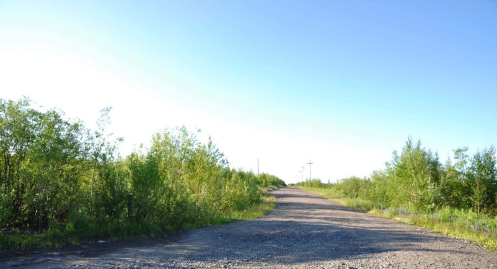
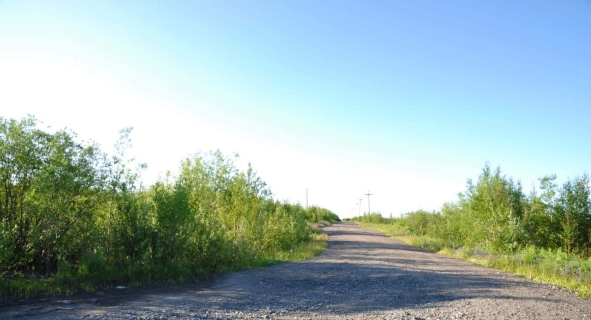

In 2004 the Governor of Krasnoyarski Krai, Alexander Khloponin, announced that, “… the Siberian city of Igarka will disappear from the map of the region” (Konovalov, 2004). Despite being one of the fastest shrinking cities in the Russian Arctic it persists on maps of the region and remains home to more than 4.7 thousand people. Located just above the Arctic circle on the east bank of the Yenisey River, (67˚28’N, 86˚35’E) Igarka provides access to the Arctic Ocean’s Northern Sea Route. The city was developed around a lumber processing plant and is a typical monotown, or an economy dominated by a single industry. At the peak of state run production, Igarka sustained more than 20,000 people. The fall of the Soviet Union followed by the closure of the local sawmill in 2000 (Parente and others 2012) resulted in a continuous out-migration of residents to places with better economic opportunities, leaving only 4,700 people in Igarka as of 2017 (Rosstat 2018). Igarka’s urban footprint has also decreased by 14.5%, or 4.1 km2, from the mid-1980s to the 2010s as measured from NASA’s Landsat satellite imagery (Nyland 2015).
In July 2015 the International Field Course on Permafrost visited Igarka and through a museum visit, discussions with locals, and repeat photography, gained a better understanding of the drastic changes to the cityscape and unique challenges to the sustainability of Arctic urban communities. The selection of repeat photographs presented in this work provides a historic perspective illustrating Siberian culture through its vernacular architecture, and the community’s resilience in the midst of climatic and economic challenges.
Igarka has a tumultuous history with three distinctive boom and bust economic cycles. The first economic boom was driven by investment from the state-owned North Siberian Stockholder Company of Industry and Trade, Komsevmorput. Komsevmorput recognized the strategic geographic position of this inland deep-water port and established Igarka as a lumber processing and shipping center in 1929. Timber was floated from logging sites down tributaries to the Yenisei River and then to Igarka where it was processed at a sawmill and shipped to major distribution centers. Igraka grew rapidly primarily due to the influx of exiles sent there in the early 1930s during collectivization and was awarded “city” status in 1931. The requirements for city status in the Soviet Union included a population greater than 12,000 people with at least 85% of residents not employed in agriculture (Feldbrugge and others 1985, 110).
The head of Komsevmorput, Boris Lavrov, was determined to develop Igarka as a prototype for the ideal Soviet Arctic city that would foster industry, culture, and science. He commissioned architect Ivan Leonidov who referred to Igarka as a “city of sun” and outlined futuristic designs for the first Soviet city to be built on permafrost, or perennially frozen ground, including large glass buildings and an airship terminal (Figure 1) (Toshchev 2008). While Leonidov’s glass spires were not built, several of his designs for ornate multistory wooden structures were erected along Igarka’s thoroughfares (Reisser 2012, Toshchev 2008) (Figure 2). By 1939 the population of Igarka reached its height with 23,649 people (Gosplan, 1941). Construction and industry were halted however when the Soviet Union entered World War II.
Also investing in development in Igarka at this time was the Siberian Branch of the Academy of Sciences of the USSR. In 1930 a geocryological lab was founded in Igarka and a year later in 1931, an underground permafrost research station. The research station features several shafts excavated by hand in late 1930s and early 1940s extending as far as 14 meters into the permafrost. These shafts were instrumented in order to observe and conduct experiments to study the physical and mechanical properties of frozen soils. These data were integral to ground bearing capacity investigations conducted by the geocryological lab to develop innovative new building foundations specifically engineered for permafrost (Igarka Permafrost Museum 2018).
The second boom occurred during the post-war period when Joseph Stalin envisioned Igarka’s deep harbor as an Arctic Navy base. To connect the base to the rest of the country, a 1200 km-long trans-polar railroad from Igarka to Salekhard was planned. The construction of the railroad from Igarka began in 1949 using GULAG labor. The exact population of the city in late 1940s and early 1950s is not known, however, the prison population alone near Igarka during this period was around 30,000 people (Mihalev 2008). In addition, around 5,000 people were exiled to Igarka in the late 1940s from the Baltic States, predominantly Lithuanians (Krasnoyarsk Memorial 2018). After the death of Joseph Salin in 1953, the railroad project was abandoned uncompleted and the GULAG system was dismantled (Mote 2003) allowing many exiles the opportunity to leave. According to the Soviet Census, the population of Igarka then dropped to 14,311 people by 1959 (Main Statistical Agency 1960).
The third, and most recent boom was the longest period of economic prosperity for Igarka. By 1965 the mill had become the second largest Soviet port exporting lumber (Parente and others 2012). A slow decline began however after 1976 and the implementation of environmental regulations on timber floating by the State Standards Committee (Ziegler 1990, 112). However, by 1989 the population of Igarka had rebounded to 18,820 people (Population 1990).
After the dissolution of the Soviet Union this remote lumber outpost did not prove viable in a market economy. The high costs associated with the extreme climate conditions and distance from markets forced the sawmill to close in 2000. Despite wage incentives, known as ‘northern subsidies,’ offered to residents to encourage them to stay and contribute to the local economy, there has been steady and continued out migration from the city. By 2002 the population of Igarka dropped to 8,627 people and has since dropped below 5,000 people (4,754 people) (Rosstat 2018).
Development during this last economic cycle through the 1950s-1980s consisted primarily of concrete housing blocks, commonly referred to as, “commieblocks,” mass-produced and assembled throughout the Soviet Union. These residential areas are considered Igarka’s “newer neighborhoods” as there has been no new construction there since the end of the Soviet era. The multistory concrete structures are significantly heavier than the older wooden buildings and require permafrost specific foundation designs developed at the local geocryological lab to remain stable.
Permafrost degradation, frost heave, and thaw subsidence affect the stability of buildings throughout Igarka and require regular monitoring and maintenance of foundations (Grebenets 2003, Tananaev and Kazansky 2012). Mean annual air temperature in Igarka has increased by 1.6° C over the period from 1975 to 2015 contributing to near-surface permafrost temperatures warming by 3°C at a depth of 3 meters (Streletskiy and others 2015). Warming of such magnitude, has caused these ice-rich sediments to thaw producing ground subsidence resulting in building deformations (Figure 3).
The city of Igarka could no longer afford maintenance costs associated with permafrost thaw and the increasingly disproportionate population compared to its urban footprint. In response to these issues in 2005 Deputy Governor of Krasnoyarsk Krai, Lev Kuznetsov, announced that those living in the dilapidated historic district would be relocated and compensated for their property. Pensioners and those with disabilities were to be resettled out of the city and residents of working age offered vacant apartments in newer Igarkan neighborhoods (Trud 2005). The same year the Karasnoyarskiy Kray parliament formalized this plan with a law that would resettle 515 families (1175 people) from Igarka to "regions more appropriate for human habitation" over the following two years from 2006 to 2007. The plan also specified that 44,000 m2 of "dangerous or debilitated housing" would be demolished to "reduce unnecessary burden to the municipal budget associated with maintaining old structures, utility lines and transportation infrastructure" (Krasnoyarskiy Kray Law #17-4424). Following resident relocation the historic district was razed through controlled burns to concentrate remaining public resources.
While the historic areas were being razed there was some development on Igarskiy Island after management of the airport switched from the federal to regional government in 2009. In 2011 the runway was expanded and a new complex was constructed consisting of several buildings and holding tanks (Cheremshanka, 2018). This most recent development was primarily in support of oil and gas fields west of Igarka as their airport represents one of the few points of entry. Despite this most recent development by the oil and gas industry continued investment into resource extraction still leaves Igarka prone to boom and bust cycles.
In an effort to illustrate the drastic changes that Igarka’s historic neighborhood has undergone in this most recent economic bust, a total of 31 photos from a housing survey conducted in Igarka in 1966 were recreated and georeferenced in July 2015 with the help of students from the International Field Course on Permafrost and local knowledge. Many classes from this field course have visited Igarka to conduct geocryological investigations in the surrounding tundra and taiga environments and geotechnical investigations within the city. A key component of this course is to educate students on permafrost specific construction practices and the impacts of permafrost dynamics on different structures. Local knowledge was essential to the housing survey with students as there are very few remaining street signs or landmarks left to navigate by in the historic district. Vegetation has largely reclaimed the area following the controlled burns and a number of unmarked dirt roads are largely all that remain.
Below are four selected photos taken from intersections with views down historic streets that depict mid-century Siberian life and the drastic changes since the consolidation of the city in the early 2000s. Photo locations and perspectives are shown on Map 2.
Figure 4 shows a north-facing view down Taymyrskaya Street. In 1966 this was a residential area with several multistory wooden apartment buildings for sawmill and port workers. Today the dirt road is all that remains besides rubble from the buildings scattered through the surrounding brush. Large alder shrubs and silver birch trees typical of the surrounding natural mixed tundra and taiga environment have reclaimed the area.
 

Kirova Street was one of the main thoroughfares, and is featured in Figure 5 facing northeast. This street was a mix of shops and housing leading up to the theater, a cultural center. This neoclassical style theater, in the background of both the 1966 and 2015 photos, is one of the few buildings still standing in the historic district, though the inside has extensive fire damage. Also, note the abundance of locally processed lumber employed as the primary building material in the 1966 photo.
From the opposite end of Kirova Street, figure 6 shows the perspective standing in front of the theater facing southwest. In 1966 the road and its sidewalks were paved with wooden planks - a fascinating example of vernacular architecture, or construction styles based on local materials, cultural values, and community needs (Wells 1986). In this case the wooden buildings and roads were constructed according to Russian tradition using the locally milled lumber felled in the surrounding taiga.
The road design in particular is specific to this permafrost environment. Common paving materials including cement and asphalt effectively conduct heat promoting underlying permafrost to thaw causing overlying roads to degrade. There are several permafrost specific engineering practices to compensate for these issues. One method is to insulate the ground beneath the road. This is often done by building up an earthen embankment with insulation (Davis 2001, 241). Figure 7 shows how Kirova Street was built up and the wooden planks would have served as insulation. Despite this insulative material, the 1966 sidewalk and road was still significantly warped from frost heave. However, the availability of locally processed lumber allowed for easy repair and maintenance of the roads and sidewalks.
Figure 7, faces southwest on Chkalova Street. Again, multistory wooden residential buildings and a raised wooden sidewalk are featured in the fore- and mid-ground of the 1966 photo, and in the background you can also see part of the now closed and largely demolished sawmill and lumber yard. Perhaps the most interesting component in both photos is the public bus. Despite the planned relocation and demolition of the historic district the public bus line still makes its regular route through historic Igarka for the flat rate fare of 30 rubles, or approximately 50¢ (based on the exchange rate in July 2015).
A number of features highlighted in the historic photos shown above constitute mid-20th century Siberian vernacular architecture adapted to life on permafrost. The repeat photos taken in 2015 show the significant recovery of natural landcovers following controlled burns or an ecological recovery similar to that envisioned by Weisman in his popular book, A World Without Us (2008). The encroachment of vegetation constitutes secondary succession, or the regrowth after a disturbance. Species occupying these recovered areas will change over time until they resemble the original mixed tundra/taiga surroundings.
The issues resulting from the history of repeated boom and bust economic cycles in Igarka is not unique and is common to many other towns and cities centered on a single industry in Siberia and around the world. So called “rustbelts” have developed in regions including the American Midwest, southern Ontario, Canada, southeast Britain, and North Rhine-Westphalia, Germany (e.g. Florida 1995; Gertler 1995; Cooke 1995; Morris and Plake 1995). The sustainable development of shrinking cities within these former industrial regions is an active topic of discussion is a variety of disciplines.
A range of urban planning schemes have been proposed and implemented to compensate for increasingly oversized infrastructure relative to diminished populations (Tumber 2011). Some plans have proven to be more successful than others. For example, major investments in tourism in Flint, Michigan after the loss of the auto industry in the 1980s failed and only contributed to the city’s debt (Bélanger 2009). Meanwhile, in Youngstown, Ohio, a former steel and manufacturing hub, a plan was implemented similar to that in Igarka. Abandoned and dilapidated industrial areas in Youngstown were either re-zoned or land banked and then razed as necessary so that public utilities including sewage, water, and power could be discontinued and consolidated for better management (Bélanger 2009).
A number of advantages have been attributed to physically shrinking de-urbanizing communities including minimizing the maintenance responsibilities for public works departments, reduced or appropriated taxes, and increased green spaces. In relation to the growing field of urban ecology, reclamation of areas through secondary succession by native plant species after razing infrastructure can also provide a variety of ecosystem services to a community. Revegetated areas can be used for recreation and, being more permeable than built up areas, they also reduce stormwater runoff (Bélanger 2009, Desimini 2014).
The term, “planned shrinkage” was coined in 1976 by urban planner Roger Starr who proposed it be implemented in New York City in areas of blight (Desimini 2014, Starr 1976). Economic hardship in recent decades has promoted plans and research centered on planned relocation and consolidation also referred to as “smart decline” (e.g. Hollander and Németh 2011).
Igarka and Youngstown, while very different geographically, can both be counted as success stories for planned reductions in urban footprints to aid the local management and sustainability of these communities. Admittedly, planned shrinkage is controversial as it can easily be discriminatory (e.g. Hollander and Németh 2011, Desimini 2014) and requires the destruction of historical and cultural sites as we have seen in Igarka. It becomes a cost benefit analysis for a community; preserve the historic landscape and hope to regrow the population to fit the infrastructure again or downsize for easier management of a smaller community?
Igarka, founded by the Soviet lumber industry, was the first planned Soviet city constructed on permafrost. Following the dissolution of the Soviet Union and the closure of the local sawmill, Igarka has experienced dramatic population losses. The population in Igarka is now a quarter of what was reported in the last Soviet census conducted in 1989 (Parente and others 2012).
In response to growing issues related to the safety of old infrastructure and public service management, the regional government implemented a strategy to reduce Igarka’s urban footprint through eminent domain and demolition of the historic district (Trud 2005). A total of 4.1 km2, or 15% of the urban footprint was demolished through controlled burns (Nyland 2015).
Repeat photography shows the degree to which the planned shrinkage has altered the cityscape since its height in the mid-20th century. The photos taken in July 2015 show a landscape that has nearly returned to its natural state of mixed tundra and taiga vegetation. Photos from a 1966 housing survey though, provide a glimpse of the vernacular Siberian architecture that stood until the early 2000s, namely the multistory wooden residential buildings and several streets paved with locally milled lumber.
It has been more than a decade since former Governor Khloponin’s statement that Igarka will disappear from the map. It quickly became evident to us while visiting the local museum and the historic district guided by locals that although Igarka’s population continues to dwindle those who remain take pride in their city. There are even hopeful, abet ambitious, plans by some that Igarka will rebuild and even complete Leonidov’s vision for “the city of sun” (Toshchev 2008). Igarka, in the face of geographic and climatic adversity, has shown an impressive adaptive capacity not only to extreme Arctic conditions, but also de-urbanization through planned shrinkage.
Questions remain about the involvement of local residents in the decision making process that lead to the planned shrinkage policy being implemented in Igarka as well as the equity availed to residents during the relocation process. Physically reducing the sprawl of the city however, has saved on municipal service provision costs and better positioned Igarka for new investment from oil and gas industries and tourism. The permafrost museum (originally the underground permafrost research station) continues to attract both tourists from around the world and scientific endeavors such as our field course.
While planned shrinkage policies are controversial, Igarka as a case study has the potential to offer valuable insights into the “vanishing” process. Despite policies and laws enacted, Igarka remains on the map though a much more manageable size for its current population. The snapshots in time from 1966 and 2015 illustrates the tenacity of this remote community and can serve as an example efforts toward Arctic urban sustainability.